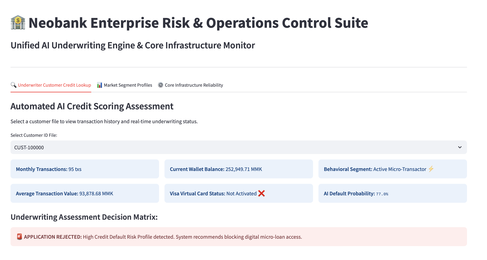

01 / DATA
DATA ANALYSIS
Sales Data Analysis
Analyzed sales data to uncover trends, compare performance, and communicate useful insights.
MY WORK & PROJECTS
Welcome to my portfolio! Here are some projects I've worked on, the tools I've used, and what I've learned along the way.
Explore my projects ↓WHAT I'VE BUILT
A selection of projects that showcase my skills and curiosity.
DATA ANALYSIS
Analyzed sales data to uncover trends, compare performance, and communicate useful insights.
MACHINE LEARNING
Built and evaluated a machine learning model to investigate a prediction problem.
DATA VISUALIZATION
Presented important metrics and findings in a clear, accessible visual dashboard.
FINTECH · DATA · PRODUCT
Selected work across banking transformation, analytics, digital products, and machine learning research.
REGULATORY DATA QUALITY
The challenge: More than 200,000 unstructured customer Unique ID records requiring alignment with CBM regulations.
The solution: Developed a pattern-recognition framework to identify recurring branch-specific errors and support systematic data corrections.
POWER BI · CORE BANKING
Developed multidimensional banking data models to analyze deposit and loan composition, regional performance, and Portfolio at Risk (PAR).
Explore dashboard ↓PRODUCT MANAGEMENT
Coordinated digital wallet product roadmaps, API integrations, functional requirements, and SIT/UAT validation for financial product features.
RESEARCH & AI
Developed and evaluated machine learning and deep learning models for software reliability growth and cross-project defect prediction.
Research conducted at Waseda University, contributing to a peer-reviewed empirical study.
PROJECT DEEP DIVE
Portfolio intelligence and credit risk monitoring with Power BI.

Dashboard mockup and demonstration. Use only approved, sanitized data in public portfolio materials.
Analyze deposit and loan composition across regions and product categories.
Explore geographic growth drivers and localized business performance.
Present Portfolio at Risk indicators to support credit risk oversight.
LET'S CONNECT
I'd love to connect and hear from you.
Find me on GitHub ↗